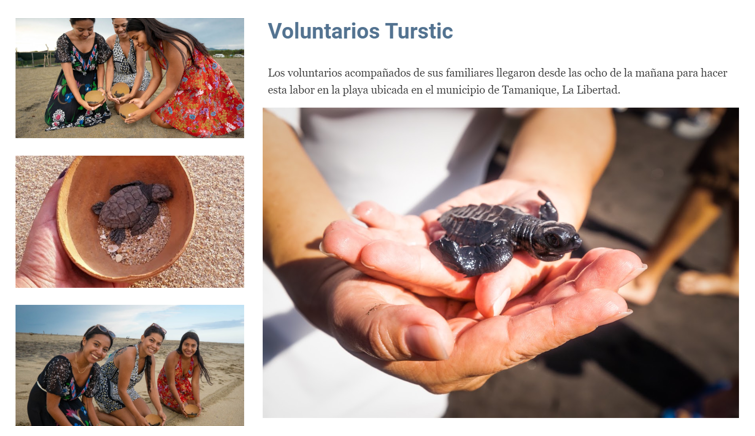

Turstic
Sofia Lara
Información General |
Liberacion de tortugas |
Limpieza de playas|
Promocionales|
Autor
Liberacion de tortugas
¿Que esta pasando con las tortugas?
En las últimas décadas los humanos se han vuelto una amenaza total para las tortugas marinas.
La contaminación del mar, la caza y pesca desmedida y las construcciones han disminuido drásticamente la probabilidad que tienen las tortugas de sobrevivir.
Desde que nacen, las tortugas tienen una prueba casi imposible. Para comenzar, de los 50 hasta 200 huevos que pone la madre un 20% no saldrá del cascarón.
Las que logran salir y comienzan el trayecto de la arena hacia el mar enfrentan todo tipo de amenazas que elimina a otro 50% de las tortuguitas.
Finalmente, de las que logran sumergirse en el agua y vencer a los depredadores marinos, olas fuertes y otros riesgos únicamente el 10% llega a la edad de reproducción.
De este 10% que llega a la edad adulta, a causa las acciones irresponsables de los humanos este porcentaje disminuye al 1%. La consecuencia es que actualmente las 8 especies de tortugas marinas están en riesgo de extinguirse.

¿Cómo puedes ayudar a conservar y proteger a las tortugas marinas?
-Protege a las tortugas que llegan a desovar y a sus crías.
– Reduce la contaminación en el mar con combustibles y otros materiales dañinos,
-Recoge los envoltorios plásticos que veas en la playa o el mar.
– No incentives la pesca masiva que contribuya a la captura incidental de tortugas.
-No consumas productos de derivados de la concha (carey).
– Denuncia a las autoridades a quien infrinja las leyes de protección para las tortugas.
¿Que actividades ofrece la fundacion?
Existen 2 alternativas:
1.LIBERACIONES PUBLICAS, cuya donación es de $3.00 por persona pudiendo liberar una tortuguita, las fechas se publican por este medio las donación se recibirán el día del evento.
2. LIBERACIONES PRIVADAS, para grupos familiares o empresas depende de la cantidad de personas que desean participar la donación, puede decidir la fecha y hora para realizarla con 2 semanas por adelantado.